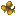
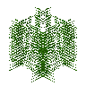
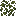
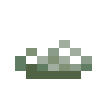
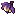
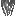

#c:animal_foods
物品标签 · 282 个已收录成员 · 另有 4 个未收录 id
标签成员 (282)
火龙果
atmospheric:dragon_fruit 金火龙果
金火龙果
atmospheric:golden_dragon_fruit蘑菇煲
minecraft:mushroom_stew谜之炖菜
minecraft:suspicious_stew
autumnity:foul_berries 锦鲤
锦鲤
environmental:koi 生鳕鱼
生鳕鱼
minecraft:cod 生鲑鱼
生鲑鱼
minecraft:salmon 热带鱼
热带鱼
minecraft:tropical_fish 河豚
河豚
minecraft:pufferfish 虹鳟
虹鳟
tide:rainbow_trout 溪鳟
溪鳟
tide:brook_trout 大口黑鲈
大口黑鲈
tide:largemouth_bass 小口黑鲈
小口黑鲈
tide:smallmouth_bass 白莓鲈
白莓鲈
tide:white_crappie 黑莓鲈
黑莓鲈
tide:black_crappie 黄鲈
黄鲈
tide:yellow_perch 鲤鱼
鲤鱼
tide:carp 狗鱼
狗鱼
tide:pike 孔雀鱼
孔雀鱼
tide:guppy 蓝鳃太阳鱼
蓝鳃太阳鱼
tide:bluegill 鲶鱼
鲶鱼
tide:catfish 玻璃梭鲈
玻璃梭鲈
tide:walleye 巨骨舌鱼
巨骨舌鱼
tide:arapaima 幻影鲶鱼
幻影鲶鱼
tide:mirage_catfish 沙虎鲨
沙虎鲨
tide:sand_tiger_shark 黏液鲑鱼
黏液鲑鱼
tide:slimy_salmon 霜冻比目鱼
霜冻比目鱼
tide:frostbite_flounder 鲟鱼
鲟鱼
tide:sturgeon 花鲈
花鲈
tide:blossom_bass 孢子追踪者
孢子追踪者
tide:spore_stalker 月眼鱼
月眼鱼
tide:mooneye 公牛鲨
公牛鲨
tide:bull_shark 海鲈
海鲈
tide:ocean_perch 红鲷鱼
红鲷鱼
tide:red_snapper 比目鱼
比目鱼
tide:flounder 鳀鱼
鳀鱼
tide:anchovy 金枪鱼
金枪鱼
tide:tuna 鲭鱼
鲭鱼
tide:mackerel 锯盖鱼
锯盖鱼
tide:snook 神仙鱼
神仙鱼
tide:angelfish 鲯鳅
鲯鳅
tide:mahi_mahi 旗鱼
旗鱼
tide:sailfish 剑鱼
剑鱼
tide:swordfish 蝠鲼
蝠鲼
tide:manta_ray 流水荆棘
流水荆棘
tide:aquathorn 海王鲤
海王鲤
tide:neptune_koi 冥王海螺
冥王海螺
tide:pluto_snail 烈阳徽章水母
烈阳徽章水母
tide:sun_emblem 土星乌贼
土星乌贼
tide:saturn_cuttlefish 火星螺
火星螺
tide:marstilus 天王双鱼
天王双鱼
tide:uranias_pisces 大白鲨
大白鲨
tide:great_white_shark 流星
流星
tide:shooting_starfish 腔棘鱼
腔棘鱼
tide:coelacanth 穴鳗
穴鳗
tide:cave_eel 穴爬鱼
穴爬鱼
tide:cave_crawler 深层石斑鱼
深层石斑鱼
tide:deep_grouper 暗影鲷鱼
暗影鲷鱼
tide:shadow_snapper 荧光鱼
荧光鱼
tide:glowfish 鮟鱇鱼
鮟鱇鱼
tide:anglerfish 深层鮟鱇鱼
深层鮟鱇鱼
tide:abyss_angler 铁脂鲤
铁脂鲤
tide:iron_tetra 青金灯笼鱼
青金灯笼鱼
tide:lapis_lanternfish 晶虾
晶虾
tide:crystal_shrimp 滴水石镖鲈
滴水石镖鲈
tide:dripstone_darter 夜光水母
夜光水母
tide:luminescent_jellyfish 晶鲤
晶鲤
tide:crystalline_carp 金鲦鱼
金鲦鱼
tide:gilded_minnow 基岩脂鲤
基岩脂鲤
tide:bedrock_tetra 裂隙鳗
裂隙鳗
tide:chasm_eel 回响鲷鱼
回响鲷鱼
tide:echo_snapper 疾风鲈
疾风鲈
tide:windbass 魔鳉
魔鳉
tide:devils_hole_pupfish 点金鱼
点金鱼
tide:midas_fish 白炽幼虫
白炽幼虫
tide:incandescent_larva 基岩虫
基岩虫
tide:bedrock_bug 嗜睡鲤
嗜睡鲤
tide:sleepy_carp 蓝色霓虹鱼
蓝色霓虹鱼
tide:blue_neonfish 审判之鱼
审判之鱼
tide:judgment_fish 深邃之蓝
深邃之蓝
tide:deep_blue 肾形畸鲶
肾形畸鲶
tide:nephrosilu 怨鳞
怨鳞
tide:vengeance 五足章鱼
五足章鱼
tide:pentapus 黑暗吞食者
黑暗吞食者
tide:darkness_eater 暗影鲨
暗影鲨
tide:shadow_shark 始祖鱼
始祖鱼
tide:alpha_fish 岩浆鲭鱼
岩浆鲭鱼
tide:magma_mackerel 微光鲤
微光鲤
tide:ember_koi 尘鲈
尘鲈
tide:ash_perch 黑曜石狗鱼
黑曜石狗鱼
tide:obsidian_pike 火山金枪鱼
火山金枪鱼
tide:volcano_tuna 地狱孔雀鱼
地狱孔雀鱼
tide:inferno_guppy 诡异孔雀鱼
诡异孔雀鱼
tide:warped_guppy 绯红尖颚
绯红尖颚
tide:crimson_fangjaw 魂鳞鱼
魂鳞鱼
tide:soulscale 凋灵鳍
凋灵鳍
tide:witherfin 烈焰剑鱼
烈焰剑鱼
tide:blazing_swordfish 苍白棒鱼
苍白棒鱼
tide:pale_clubfish 琥珀岩鱼
琥珀岩鱼
tide:amber_rockfish 末影鳍鱼
末影鳍鱼
tide:enderfin 紫颂鳕鱼
紫颂鳕鱼
tide:chorus_cod 末影滑翔者
末影滑翔者
tide:ender_glider 末影凝视者
末影凝视者
tide:endergazer 紫鲤
紫鲤
tide:violet_carp 诱惑红40号
诱惑红40号
tide:red_40 飞翔荷兰人的袜子
飞翔荷兰人的袜子
tide:dutchman_sock 鞘翅鳟
鞘翅鳟
tide:elytrout 蝠飞龙
蝠飞龙
tide:mantyvern 劫掠鱿鱼
劫掠鱿鱼
tide:snatcher_squid 虚空寻觅者
虚空寻觅者
tide:voidseeker 龙鱼
龙鱼
tide:dragon_fish 生狗鱼
生狗鱼
upgrade_aquatic:pike 熟狗鱼
熟狗鱼
upgrade_aquatic:cooked_pike 生鲈鱼
生鲈鱼
upgrade_aquatic:perch 熟鲈鱼
熟鲈鱼
upgrade_aquatic:cooked_perch 生蓑鲉
生蓑鲉
upgrade_aquatic:lionfish 熟蓑鲉
熟蓑鲉
upgrade_aquatic:cooked_lionfish 毒棘鱼
毒棘鱼
wan_ancient_beasts:toxlacanth 熟毒棘鱼
熟毒棘鱼
wan_ancient_beasts:cooked_toxlacanth 熟鳕鱼
熟鳕鱼
minecraft:cooked_cod 熟鲑鱼
熟鲑鱼
minecraft:cooked_salmon
minecraft:seagrass
environmental:duckweed 稻米
稻米
kaleidoscope_cookery:rice 甜浆果
甜浆果
minecraft:sweet_berries 樱桃
樱桃
environmental:cherries 樱桃
樱桃
vinery:cherry 草莓
草莓
neapolitan:strawberries 白草莓
白草莓
neapolitan:white_strawberries 草莓
草莓
farm_and_charm:strawberry
environmental:cup_lichen 胡萝卜
胡萝卜
minecraft:carrot 小麦
小麦
minecraft:wheat月辉浆果
eternal_starlight:lunar_berries
eternal_starlight:abyssal_fruit 晶壳麦
晶壳麦
eternal_starlight:crinoa 生火鸡肉
生火鸡肉
autumnity:turkey 生火鸡肉块
生火鸡肉块
autumnity:turkey_piece 熟火鸡肉
熟火鸡肉
autumnity:cooked_turkey 熟火鸡肉块
熟火鸡肉块
autumnity:cooked_turkey_piece 蟹肉
蟹肉
ecologics:crab_meat 生鸭肉
生鸭肉
environmental:duck 熟鸭肉
熟鸭肉
environmental:cooked_duck 生鹿排
生鹿排
environmental:venison 熟鹿排
熟鹿排
environmental:cooked_venison 腐肉干
腐肉干
eternal_starlight:rotten_flesh_jerky 高塔乌贼
高塔乌贼
eternal_starlight:rookfish 熟高塔乌贼
熟高塔乌贼
eternal_starlight:cooked_rookfish 光鲀
光鲀
eternal_starlight:luminofish 熟光鲀
熟光鲀
eternal_starlight:cooked_luminofish 光角食人鱼
光角食人鱼
eternal_starlight:luminaris 熟光角食人鱼
熟光角食人鱼
eternal_starlight:cooked_luminaris 极光鹿肉排
极光鹿肉排
eternal_starlight:aurora_deer_steak 熟极光鹿肉排
熟极光鹿肉排
eternal_starlight:cooked_aurora_deer_steak 硕鼠兽肉
硕鼠兽肉
eternal_starlight:ratlin_meat 熟硕鼠兽肉
熟硕鼠兽肉
eternal_starlight:cooked_ratlin_meat 黯影蜗牛肉
黯影蜗牛肉
eternal_starlight:shadow_snail_meat 熟黯影蜗牛肉
熟黯影蜗牛肉
eternal_starlight:cooked_shadow_snail_meat 魔窟腐肉
魔窟腐肉
eternal_starlight:doomeden_carrion 生薄荷肉排
生薄荷肉排
neapolitan:mint_chops 熟薄荷肉排
熟薄荷肉排
neapolitan:cooked_mint_chops 生远古兽肉
生远古兽肉
wan_ancient_beasts:raw_ancient_meat 熟远古兽肉
熟远古兽肉
wan_ancient_beasts:cooked_ancient_meat 生牛肉
生牛肉
minecraft:beef 生鸡肉
生鸡肉
minecraft:chicken 牛排
牛排
minecraft:cooked_beef 熟鸡肉
熟鸡肉
minecraft:cooked_chicken 熟羊肉
熟羊肉
minecraft:cooked_mutton 熟猪排
熟猪排
minecraft:cooked_porkchop 熟兔肉
熟兔肉
minecraft:cooked_rabbit 生羊肉
生羊肉
minecraft:mutton 生猪排
生猪排
minecraft:porkchop 生兔肉
生兔肉
minecraft:rabbit 腐肉
腐肉
minecraft:rotten_flesh 鸡肉块
鸡肉块
farm_and_charm:chicken_parts 生切制小肉
生切制小肉
kaleidoscope_cookery:raw_cut_small_meats 生羊排
生羊排
kaleidoscope_cookery:raw_lamb_chops 熟羊排
熟羊排
kaleidoscope_cookery:cooked_lamb_chops 培根
培根
farm_and_charm:bacon 生五花肉
生五花肉
kaleidoscope_cookery:raw_pork_belly 熟五花肉
熟五花肉
kaleidoscope_cookery:cooked_pork_belly 发光地衣
发光地衣
minecraft:glow_lichen
eternal_starlight:cave_moss 核桃树叶
核桃树叶
caupona:walnut_leaves 无花果树叶
无花果树叶
caupona:fig_leaves 枸杞树叶
枸杞树叶
caupona:wolfberry_leaves 苍白橡树树叶
苍白橡树树叶
minecraft:pale_oak_leaves 扭曲树叶
扭曲树叶
architects_palette:twisted_leaves 花梨木树叶
花梨木树叶
atmospheric:rosewood_leaves 酸枝树叶
酸枝树叶
atmospheric:morado_leaves 开花酸枝树叶
开花酸枝树叶
atmospheric:flowering_morado_leaves 丝兰树叶
丝兰树叶
atmospheric:yucca_leaves 梾树树叶
梾树树叶
atmospheric:kousa_leaves 白杨树叶
白杨树叶
atmospheric:aspen_leaves 绿色白杨树叶
绿色白杨树叶
atmospheric:green_aspen_leaves 阴郁木树叶
阴郁木树叶
atmospheric:grimwood_leaves 月桂树叶
月桂树叶
atmospheric:laurel_leaves 干燥月桂树叶
干燥月桂树叶
atmospheric:dry_laurel_leaves 醋栗树叶
醋栗树叶
atmospheric:currant_leaves 枫叶
枫叶
autumnity:maple_leaves 黄色枫叶
黄色枫叶
autumnity:yellow_maple_leaves 橙色枫叶
橙色枫叶
autumnity:orange_maple_leaves 红色枫叶
红色枫叶
autumnity:red_maple_leaves 苹果树树叶
苹果树树叶
bountifulfares:apple_leaves 盛开的苹果树树叶
盛开的苹果树树叶
bountifulfares:flowering_apple_leaves 金苹果树树叶
金苹果树树叶
bountifulfares:golden_apple_leaves 盛开的金苹果树树叶
盛开的金苹果树树叶
bountifulfares:flowering_golden_apple_leaves 橙子树树叶
橙子树树叶
bountifulfares:orange_leaves 盛开的橙子树树叶
盛开的橙子树树叶
bountifulfares:flowering_orange_leaves 柠檬树树叶
柠檬树树叶
bountifulfares:lemon_leaves 盛开的柠檬树树叶
盛开的柠檬树树叶
bountifulfares:flowering_lemon_leaves 李子树树叶
李子树树叶
bountifulfares:plum_leaves 盛开的李子树树叶
盛开的李子树树叶
bountifulfares:flowering_plum_leaves 朽老树树叶
朽老树树叶
bountifulfares:hoary_leaves 核桃树树叶
核桃树树叶
bountifulfares:walnut_leaves 椰树树叶
椰树树叶
ecologics:coconut_leaves 核桃树叶
核桃树叶
ecologics:walnut_leaves 柳树树叶
柳树树叶
environmental:willow_leaves 松树树叶
松树树叶
environmental:pine_leaves 紫藤树叶
紫藤树叶
environmental:wisteria_leaves 粉红色紫藤树叶
粉红色紫藤树叶
environmental:pink_wisteria_leaves 蓝色紫藤树叶
蓝色紫藤树叶
environmental:blue_wisteria_leaves 紫色紫藤树叶
紫色紫藤树叶
environmental:purple_wisteria_leaves 白色紫藤树叶
白色紫藤树叶
environmental:white_wisteria_leaves 李树树叶
李树树叶
environmental:plum_leaves 明朗李树树叶
明朗李树树叶
environmental:cheerful_plum_leaves 阴沉李树树叶
阴沉李树树叶
environmental:moody_plum_leaves 木槿树叶
木槿树叶
environmental:hibiscus_leaves 月辉树叶
月辉树叶
eternal_starlight:lunar_leaves 北地树叶
北地树叶
eternal_starlight:northland_leaves 阴榕树树叶
阴榕树树叶
eternal_starlight:banyin_leaves 猩红树叶
猩红树叶
eternal_starlight:scarlet_leaves 榧树树叶
榧树树叶
eternal_starlight:torreya_leaves 摇篮树叶
摇篮树叶
eternal_starlight:cradlewood_leaves Dark Cherry Leaves
Dark Cherry Leaves
vinery:dark_cherry_leaves 葡萄藤叶
葡萄藤叶
vinery:grapevine_leaves 苹果树叶
苹果树叶
vinery:apple_leaves 部分开花的粉花紫藤树叶
部分开花的粉花紫藤树叶
natures_spirit:part_pink_wisteria_leaves 黄叶枫树树叶
黄叶枫树树叶
natures_spirit:yellow_aspen_leaves 梭梭树叶
梭梭树叶
natures_spirit:saxaul_leaves 冷杉树叶
冷杉树叶
natures_spirit:fir_leaves 部分开花的白花紫藤树叶
部分开花的白花紫藤树叶
natures_spirit:part_white_wisteria_leaves 紫藤树叶
紫藤树叶
natures_spirit:wisteria_leaves 部分开花的紫藤树叶
部分开花的紫藤树叶
natures_spirit:part_purple_wisteria_leaves 雪松树叶
雪松树叶
natures_spirit:cedar_leaves 粉花紫藤树叶
粉花紫藤树叶
natures_spirit:pink_wisteria_leaves 蓝花紫藤树叶
蓝花紫藤树叶
natures_spirit:blue_wisteria_leaves 橄榄树叶
橄榄树叶
natures_spirit:olive_leaves 短叶丝兰树叶
短叶丝兰树叶
natures_spirit:joshua_leaves 结霜冷杉树叶
结霜冷杉树叶
natures_spirit:frosty_fir_leaves 橙叶枫树树叶
橙叶枫树树叶
natures_spirit:orange_maple_leaves 白花紫紫藤树叶
白花紫紫藤树叶
natures_spirit:white_wisteria_leaves 落叶松树叶
落叶松树叶
natures_spirit:larch_leaves 桃花心树叶
桃花心树叶
natures_spirit:mahogany_leaves 红杉树叶
红杉树叶
natures_spirit:redwood_leaves 紫藤树叶
紫藤树叶
natures_spirit:purple_wisteria_leaves 白杨树叶
白杨树叶
natures_spirit:aspen_leaves 红叶枫树枫叶
红叶枫树枫叶
natures_spirit:red_maple_leaves 柏树树叶
柏树树叶
natures_spirit:cypress_leaves 椰子树叶
椰子树叶
natures_spirit:coconut_leaves 柳树树叶
柳树树叶
natures_spirit:willow_leaves 柳杉树叶
柳杉树叶
natures_spirit:sugi_leaves 黄叶枫树树叶
黄叶枫树树叶
natures_spirit:yellow_maple_leaves 假紫荆树叶
假紫荆树叶
natures_spirit:palo_verde_leaves 结霜红杉树叶
结霜红杉树叶
natures_spirit:frosty_redwood_leaves 部分开花的蓝花紫藤树叶
部分开花的蓝花紫藤树叶
natures_spirit:part_blue_wisteria_leaves 牧豆树叶
牧豆树叶
natures_spirit:ghaf_leaves 桑树树叶
桑树树叶
upgrade_aquatic:river_leaves 丛林树叶
丛林树叶
minecraft:jungle_leaves 橡树树叶
橡树树叶
minecraft:oak_leaves 云杉树叶
云杉树叶
minecraft:spruce_leaves 深色橡树树叶
深色橡树树叶
minecraft:dark_oak_leaves 金合欢树叶
金合欢树叶
minecraft:acacia_leaves 白桦树叶
白桦树叶
minecraft:birch_leaves 杜鹃树叶
杜鹃树叶
minecraft:azalea_leaves 盛开的杜鹃树叶
盛开的杜鹃树叶
minecraft:flowering_azalea_leaves 红树树叶
红树树叶
minecraft:mangrove_leaves 樱花树叶
樱花树叶
minecraft:cherry_leaves香蕉串
neapolitan:banana_bunch 核桃
核桃
caupona:walnut 番茄
番茄
kaleidoscope_cookery:tomato
atmospheric:dragon_fruit
金火龙果atmospheric:golden_dragon_fruit蘑菇煲
minecraft:mushroom_stew谜之炖菜
minecraft:suspicious_stew

污秽浆果autumnity:foul_berries
锦鲤environmental:koi
生鳕鱼minecraft:cod
生鲑鱼minecraft:salmon
热带鱼minecraft:tropical_fish
河豚minecraft:pufferfish
虹鳟tide:rainbow_trout
溪鳟tide:brook_trout
大口黑鲈tide:largemouth_bass
小口黑鲈tide:smallmouth_bass
白莓鲈tide:white_crappie
黑莓鲈tide:black_crappie
黄鲈tide:yellow_perch
鲤鱼tide:carp
狗鱼tide:pike
孔雀鱼tide:guppy
蓝鳃太阳鱼tide:bluegill
鲶鱼tide:catfish
玻璃梭鲈tide:walleye
巨骨舌鱼tide:arapaima
幻影鲶鱼tide:mirage_catfish
沙虎鲨tide:sand_tiger_shark
黏液鲑鱼tide:slimy_salmon
霜冻比目鱼tide:frostbite_flounder
鲟鱼tide:sturgeon
花鲈tide:blossom_bass
孢子追踪者tide:spore_stalker
月眼鱼tide:mooneye
公牛鲨tide:bull_shark
海鲈tide:ocean_perch
红鲷鱼tide:red_snapper
比目鱼tide:flounder
鳀鱼tide:anchovy
金枪鱼tide:tuna
鲭鱼tide:mackerel
锯盖鱼tide:snook
神仙鱼tide:angelfish
鲯鳅tide:mahi_mahi
旗鱼tide:sailfish
剑鱼tide:swordfish
蝠鲼tide:manta_ray
流水荆棘tide:aquathorn
海王鲤tide:neptune_koi
冥王海螺tide:pluto_snail
烈阳徽章水母tide:sun_emblem
土星乌贼tide:saturn_cuttlefish
火星螺tide:marstilus
天王双鱼tide:uranias_pisces
大白鲨tide:great_white_shark
流星tide:shooting_starfish
腔棘鱼tide:coelacanth
穴鳗tide:cave_eel
穴爬鱼tide:cave_crawler
深层石斑鱼tide:deep_grouper
暗影鲷鱼tide:shadow_snapper
荧光鱼tide:glowfish
鮟鱇鱼tide:anglerfish
深层鮟鱇鱼tide:abyss_angler
铁脂鲤tide:iron_tetra
青金灯笼鱼tide:lapis_lanternfish
晶虾tide:crystal_shrimp
滴水石镖鲈tide:dripstone_darter
夜光水母tide:luminescent_jellyfish
晶鲤tide:crystalline_carp
金鲦鱼tide:gilded_minnow
基岩脂鲤tide:bedrock_tetra
裂隙鳗tide:chasm_eel
回响鲷鱼tide:echo_snapper
疾风鲈tide:windbass
魔鳉tide:devils_hole_pupfish
点金鱼tide:midas_fish
白炽幼虫tide:incandescent_larva
基岩虫tide:bedrock_bug
嗜睡鲤tide:sleepy_carp
蓝色霓虹鱼tide:blue_neonfish
审判之鱼tide:judgment_fish
深邃之蓝tide:deep_blue
肾形畸鲶tide:nephrosilu
怨鳞tide:vengeance
五足章鱼tide:pentapus
黑暗吞食者tide:darkness_eater
暗影鲨tide:shadow_shark
始祖鱼tide:alpha_fish
岩浆鲭鱼tide:magma_mackerel
微光鲤tide:ember_koi
尘鲈tide:ash_perch
黑曜石狗鱼tide:obsidian_pike
火山金枪鱼tide:volcano_tuna
地狱孔雀鱼tide:inferno_guppy
诡异孔雀鱼tide:warped_guppy
绯红尖颚tide:crimson_fangjaw
魂鳞鱼tide:soulscale
凋灵鳍tide:witherfin
烈焰剑鱼tide:blazing_swordfish
苍白棒鱼tide:pale_clubfish
琥珀岩鱼tide:amber_rockfish
末影鳍鱼tide:enderfin
紫颂鳕鱼tide:chorus_cod
末影滑翔者tide:ender_glider
末影凝视者tide:endergazer
紫鲤tide:violet_carp
诱惑红40号tide:red_40
飞翔荷兰人的袜子tide:dutchman_sock
鞘翅鳟tide:elytrout
蝠飞龙tide:mantyvern
劫掠鱿鱼tide:snatcher_squid
虚空寻觅者tide:voidseeker
龙鱼tide:dragon_fish
生狗鱼upgrade_aquatic:pike
熟狗鱼upgrade_aquatic:cooked_pike
生鲈鱼upgrade_aquatic:perch
熟鲈鱼upgrade_aquatic:cooked_perch
生蓑鲉upgrade_aquatic:lionfish
熟蓑鲉upgrade_aquatic:cooked_lionfish
毒棘鱼wan_ancient_beasts:toxlacanth
熟毒棘鱼wan_ancient_beasts:cooked_toxlacanth
熟鳕鱼minecraft:cooked_cod
熟鲑鱼minecraft:cooked_salmon

海草minecraft:seagrass

浮萍environmental:duckweed
稻米kaleidoscope_cookery:rice
甜浆果minecraft:sweet_berries
樱桃environmental:cherries
樱桃vinery:cherry
草莓neapolitan:strawberries
白草莓neapolitan:white_strawberries
草莓farm_and_charm:strawberry

杯状地衣environmental:cup_lichen
胡萝卜minecraft:carrot
小麦minecraft:wheat月辉浆果
eternal_starlight:lunar_berries

渊海果eternal_starlight:abyssal_fruit
晶壳麦eternal_starlight:crinoa
生火鸡肉autumnity:turkey
生火鸡肉块autumnity:turkey_piece
熟火鸡肉autumnity:cooked_turkey
熟火鸡肉块autumnity:cooked_turkey_piece
蟹肉ecologics:crab_meat
生鸭肉environmental:duck
熟鸭肉environmental:cooked_duck
生鹿排environmental:venison
熟鹿排environmental:cooked_venison
腐肉干eternal_starlight:rotten_flesh_jerky
高塔乌贼eternal_starlight:rookfish
熟高塔乌贼eternal_starlight:cooked_rookfish
光鲀eternal_starlight:luminofish
熟光鲀eternal_starlight:cooked_luminofish
光角食人鱼eternal_starlight:luminaris
熟光角食人鱼eternal_starlight:cooked_luminaris
极光鹿肉排eternal_starlight:aurora_deer_steak
熟极光鹿肉排eternal_starlight:cooked_aurora_deer_steak
硕鼠兽肉eternal_starlight:ratlin_meat
熟硕鼠兽肉eternal_starlight:cooked_ratlin_meat
黯影蜗牛肉eternal_starlight:shadow_snail_meat
熟黯影蜗牛肉eternal_starlight:cooked_shadow_snail_meat
魔窟腐肉eternal_starlight:doomeden_carrion
生薄荷肉排neapolitan:mint_chops
熟薄荷肉排neapolitan:cooked_mint_chops
生远古兽肉wan_ancient_beasts:raw_ancient_meat
熟远古兽肉wan_ancient_beasts:cooked_ancient_meat
生牛肉minecraft:beef
生鸡肉minecraft:chicken
牛排minecraft:cooked_beef
熟鸡肉minecraft:cooked_chicken
熟羊肉minecraft:cooked_mutton
熟猪排minecraft:cooked_porkchop
熟兔肉minecraft:cooked_rabbit
生羊肉minecraft:mutton
生猪排minecraft:porkchop
生兔肉minecraft:rabbit
腐肉minecraft:rotten_flesh
鸡肉块farm_and_charm:chicken_parts
生切制小肉kaleidoscope_cookery:raw_cut_small_meats
生羊排kaleidoscope_cookery:raw_lamb_chops
熟羊排kaleidoscope_cookery:cooked_lamb_chops
培根farm_and_charm:bacon
生五花肉kaleidoscope_cookery:raw_pork_belly
熟五花肉kaleidoscope_cookery:cooked_pork_belly
发光地衣minecraft:glow_lichen

洞穴苔藓eternal_starlight:cave_moss
核桃树叶caupona:walnut_leaves
无花果树叶caupona:fig_leaves
枸杞树叶caupona:wolfberry_leaves
苍白橡树树叶minecraft:pale_oak_leaves
扭曲树叶architects_palette:twisted_leaves
花梨木树叶atmospheric:rosewood_leaves
酸枝树叶atmospheric:morado_leaves
开花酸枝树叶atmospheric:flowering_morado_leaves
丝兰树叶atmospheric:yucca_leaves
梾树树叶atmospheric:kousa_leaves
白杨树叶atmospheric:aspen_leaves
绿色白杨树叶atmospheric:green_aspen_leaves
阴郁木树叶atmospheric:grimwood_leaves
月桂树叶atmospheric:laurel_leaves
干燥月桂树叶atmospheric:dry_laurel_leaves
醋栗树叶atmospheric:currant_leaves
枫叶autumnity:maple_leaves
黄色枫叶autumnity:yellow_maple_leaves
橙色枫叶autumnity:orange_maple_leaves
红色枫叶autumnity:red_maple_leaves
苹果树树叶bountifulfares:apple_leaves
盛开的苹果树树叶bountifulfares:flowering_apple_leaves
金苹果树树叶bountifulfares:golden_apple_leaves
盛开的金苹果树树叶bountifulfares:flowering_golden_apple_leaves
橙子树树叶bountifulfares:orange_leaves
盛开的橙子树树叶bountifulfares:flowering_orange_leaves
柠檬树树叶bountifulfares:lemon_leaves
盛开的柠檬树树叶bountifulfares:flowering_lemon_leaves
李子树树叶bountifulfares:plum_leaves
盛开的李子树树叶bountifulfares:flowering_plum_leaves
朽老树树叶bountifulfares:hoary_leaves
核桃树树叶bountifulfares:walnut_leaves
椰树树叶ecologics:coconut_leaves
核桃树叶ecologics:walnut_leaves
柳树树叶environmental:willow_leaves
松树树叶environmental:pine_leaves
紫藤树叶environmental:wisteria_leaves
粉红色紫藤树叶environmental:pink_wisteria_leaves
蓝色紫藤树叶environmental:blue_wisteria_leaves
紫色紫藤树叶environmental:purple_wisteria_leaves
白色紫藤树叶environmental:white_wisteria_leaves
李树树叶environmental:plum_leaves
明朗李树树叶environmental:cheerful_plum_leaves
阴沉李树树叶environmental:moody_plum_leaves
木槿树叶environmental:hibiscus_leaves
月辉树叶eternal_starlight:lunar_leaves
北地树叶eternal_starlight:northland_leaves
阴榕树树叶eternal_starlight:banyin_leaves
猩红树叶eternal_starlight:scarlet_leaves
榧树树叶eternal_starlight:torreya_leaves
摇篮树叶eternal_starlight:cradlewood_leaves
Dark Cherry Leavesvinery:dark_cherry_leaves
葡萄藤叶vinery:grapevine_leaves
苹果树叶vinery:apple_leaves
部分开花的粉花紫藤树叶natures_spirit:part_pink_wisteria_leaves
黄叶枫树树叶natures_spirit:yellow_aspen_leaves
梭梭树叶natures_spirit:saxaul_leaves
冷杉树叶natures_spirit:fir_leaves
部分开花的白花紫藤树叶natures_spirit:part_white_wisteria_leaves
紫藤树叶natures_spirit:wisteria_leaves
部分开花的紫藤树叶natures_spirit:part_purple_wisteria_leaves
雪松树叶natures_spirit:cedar_leaves
粉花紫藤树叶natures_spirit:pink_wisteria_leaves
蓝花紫藤树叶natures_spirit:blue_wisteria_leaves
橄榄树叶natures_spirit:olive_leaves
短叶丝兰树叶natures_spirit:joshua_leaves
结霜冷杉树叶natures_spirit:frosty_fir_leaves
橙叶枫树树叶natures_spirit:orange_maple_leaves
白花紫紫藤树叶natures_spirit:white_wisteria_leaves
落叶松树叶natures_spirit:larch_leaves
桃花心树叶natures_spirit:mahogany_leaves
红杉树叶natures_spirit:redwood_leaves
紫藤树叶natures_spirit:purple_wisteria_leaves
白杨树叶natures_spirit:aspen_leaves
红叶枫树枫叶natures_spirit:red_maple_leaves
柏树树叶natures_spirit:cypress_leaves
椰子树叶natures_spirit:coconut_leaves
柳树树叶natures_spirit:willow_leaves
柳杉树叶natures_spirit:sugi_leaves
黄叶枫树树叶natures_spirit:yellow_maple_leaves
假紫荆树叶natures_spirit:palo_verde_leaves
结霜红杉树叶natures_spirit:frosty_redwood_leaves
部分开花的蓝花紫藤树叶natures_spirit:part_blue_wisteria_leaves
牧豆树叶natures_spirit:ghaf_leaves
桑树树叶upgrade_aquatic:river_leaves
丛林树叶minecraft:jungle_leaves
橡树树叶minecraft:oak_leaves
云杉树叶minecraft:spruce_leaves
深色橡树树叶minecraft:dark_oak_leaves
金合欢树叶minecraft:acacia_leaves
白桦树叶minecraft:birch_leaves
杜鹃树叶minecraft:azalea_leaves
盛开的杜鹃树叶minecraft:flowering_azalea_leaves
红树树叶minecraft:mangrove_leaves
樱花树叶minecraft:cherry_leaves香蕉串
neapolitan:banana_bunch
核桃caupona:walnut
番茄kaleidoscope_cookery:tomato
使用该标签的配方
无
未收录条目 (4)
c:foods/berryc:grains/wheatsc:breadc:foods/cooked_rice